5 Data Viz and Regression in R
This guide is a brief introduction to code for implementing and visually evaluating regression models in R. It does not address the theory behind regression models. Data visualization is data munging. As we will quickly discover, the key to visualizing regression models is understanding how to get the right data into the right format. We will explore a few different approaches:
- Create models with
ggplot2 - Use Base R to Explore
lmObjects - Extract Model Data with
broom - Create Data with
library(modelr)
6 1. Create Models with ggplot2
6.1 geom_smooth()
We’ve already seen geom_smooth(), which adds a LOESS regression line with fewer than 1,000 observations and smoothing regression splines with 1,000 or more observations.
cars %>%
ggplot(mapping = aes(x = speed, y = dist)) +
geom_point() +
geom_smooth()`geom_smooth()` using method = 'loess' and formula = 'y ~ x'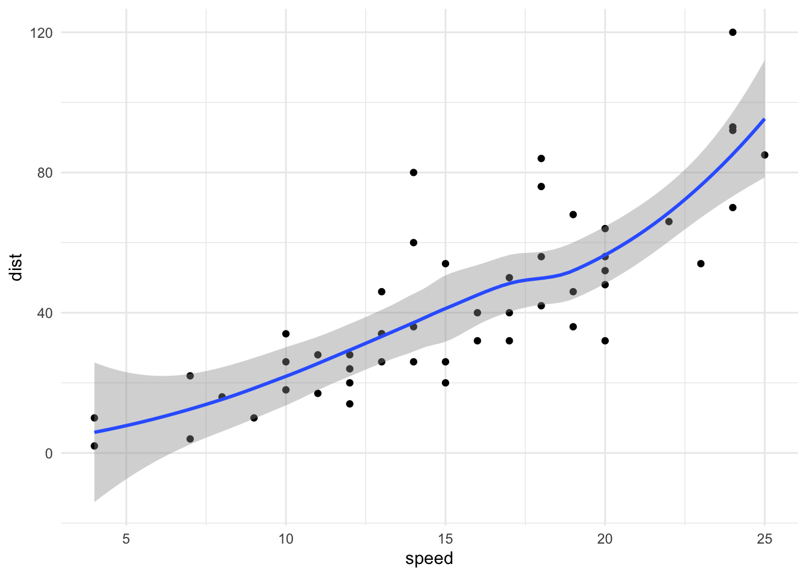
We can change the method to any of "lm", "glm", "gam", or "loess".
cars %>%
ggplot(mapping = aes(x = speed, y = dist)) +
geom_point() +
geom_smooth(method = "lm")`geom_smooth()` using formula = 'y ~ x'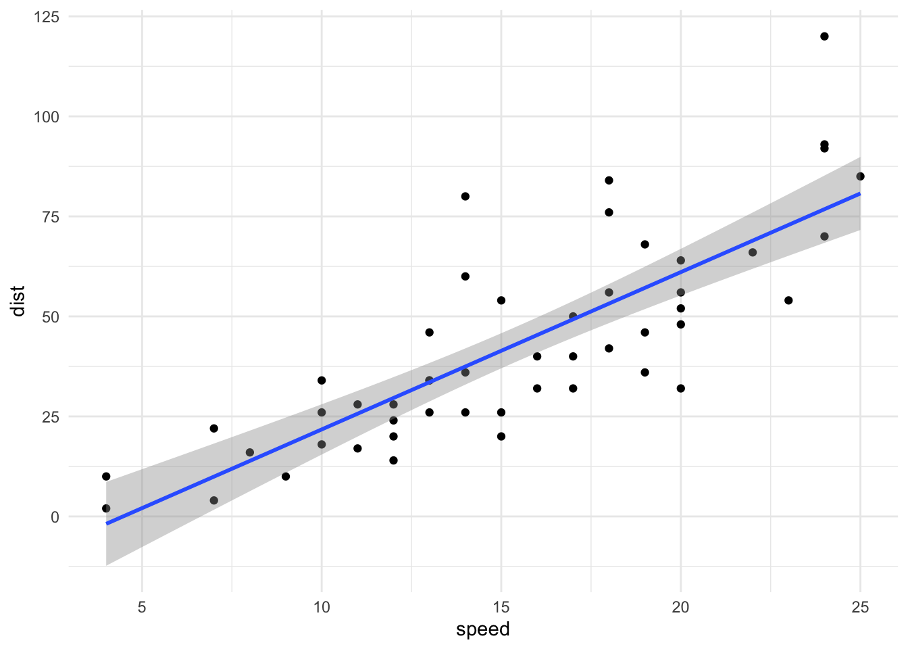
We can also change the formula and toggle off the standard error.
cars %>%
ggplot(mapping = aes(x = speed, y = dist)) +
geom_point() +
geom_smooth(
method = "lm",
formula = y ~ log(x),
se = FALSE
)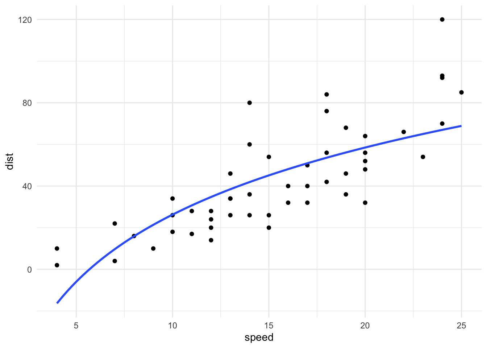
This final example is concise. It uses log(x) as a predictor but still shows the x axis in linear units.
geom_smooth() is useful for exploratory data analysis, but it is a little limiting. Next, we will consider developing models, cleaning the data, and making data visualizations as distinct steps.
7 2. Use Base R to Explore lm Objects
7.1 lm()
lm() fits linear regression models in R. Here is a simple linear regression model estimated on the cars data with stopping distance as the dependent variable and speed as the independent variable.
stopping_model <- lm(formula = dist ~ speed, data = cars)
class(stopping_model)[1] "lm"stopping_model
Call:
lm(formula = dist ~ speed, data = cars)
Coefficients:
(Intercept) speed
-17.579 3.932 The lm() function creates an object of class "lm". Many R functions have convenient (generic) methods for this object that are useful for understanding and using the output of a regression model.
7.2 summary()
summary() returns a regression table with the call, a five number summary of the residuals, coefficient estimates, standard errors, t statistics, p-values, the residual standard error, \(R^2\), adjusted \(R ^ 2\), the F-statistic, and the p-value for the F-statistic.
summary(stopping_model)
Call:
lm(formula = dist ~ speed, data = cars)
Residuals:
Min 1Q Median 3Q Max
-29.069 -9.525 -2.272 9.215 43.201
Coefficients:
Estimate Std. Error t value Pr(>|t|)
(Intercept) -17.5791 6.7584 -2.601 0.0123 *
speed 3.9324 0.4155 9.464 0.00000000000149 ***
---
Signif. codes: 0 '***' 0.001 '**' 0.01 '*' 0.05 '.' 0.1 ' ' 1
Residual standard error: 15.38 on 48 degrees of freedom
Multiple R-squared: 0.6511, Adjusted R-squared: 0.6438
F-statistic: 89.57 on 1 and 48 DF, p-value: 0.000000000001497.3 coef()
For example, coef() returns the coefficients.
coef(stopping_model)(Intercept) speed
-17.579095 3.932409 7.4 resid()
resid() can be used to select just a vector of the residuals.
resid(stopping_model)[1:10] 1 2 3 4 5 6 7 8
3.849460 11.849460 -5.947766 12.052234 2.119825 -7.812584 -3.744993 4.255007
9 10
12.255007 -8.677401 7.5 plot()
plot() will return four plots with regression diagnostics.
- (1) Residual plot: This demonstrates if the residuals have non-linear patterns or non-constant variance.
- (2) Normal QQ plot: This demonstrates if the residuals are normally distributed.
- (3) Scale-Location plot: This also demonstrates if the residuals have non-constant variance.
- (4): Residuals vs. leverage plot This demonstrates cases that may be influential.
plot(stopping_model)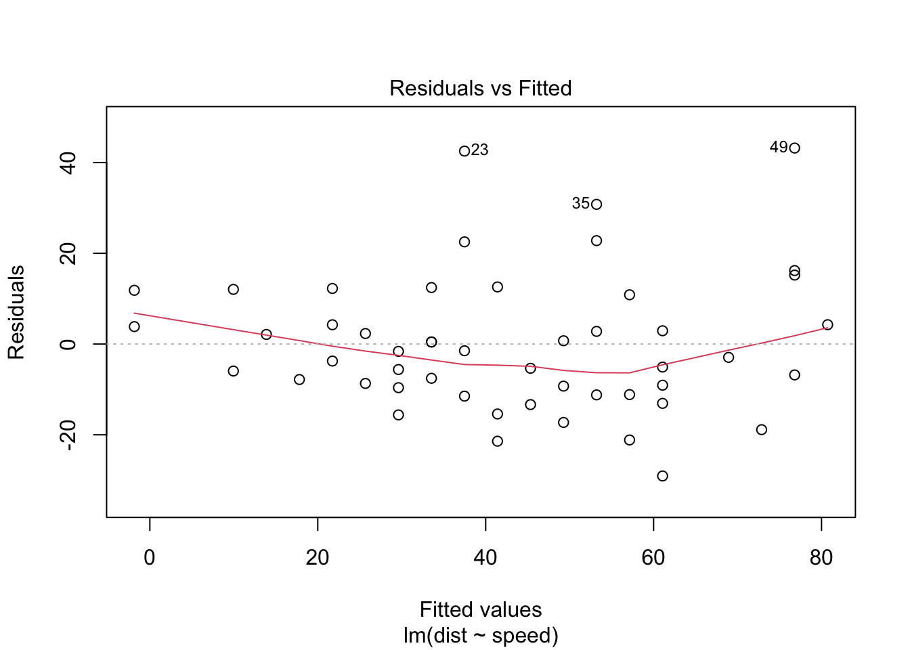
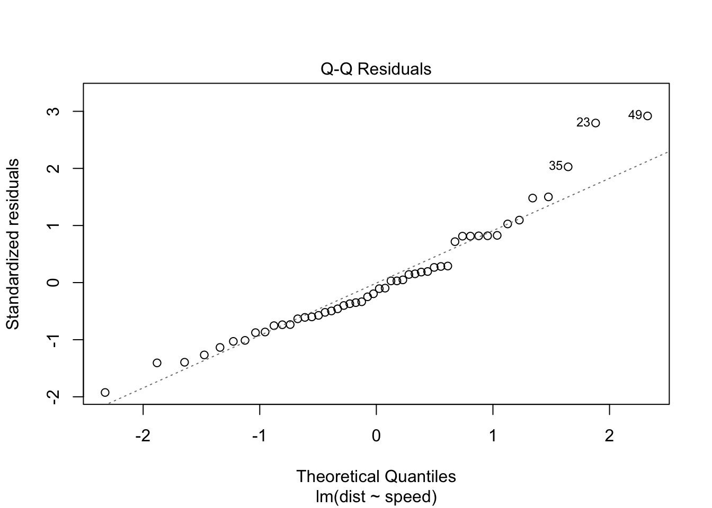
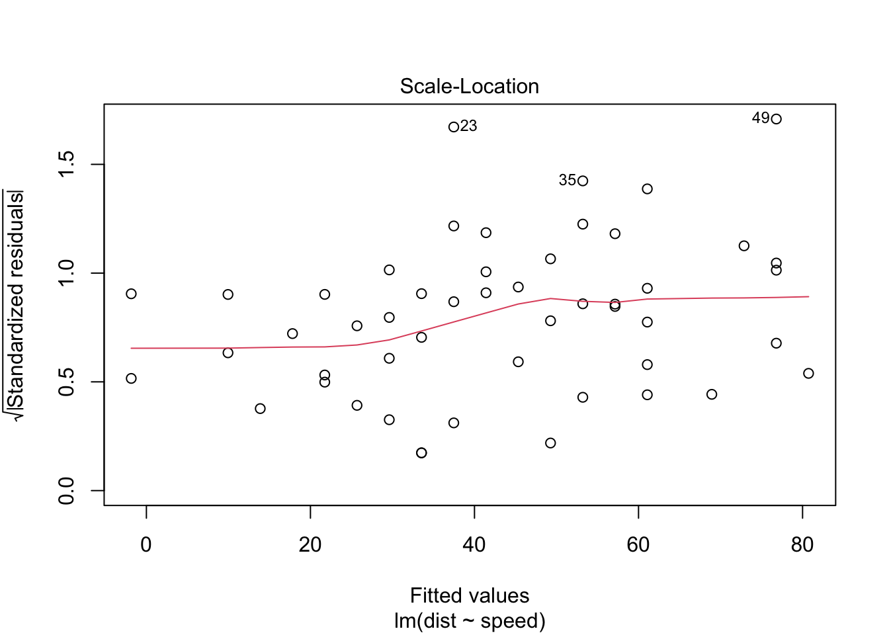
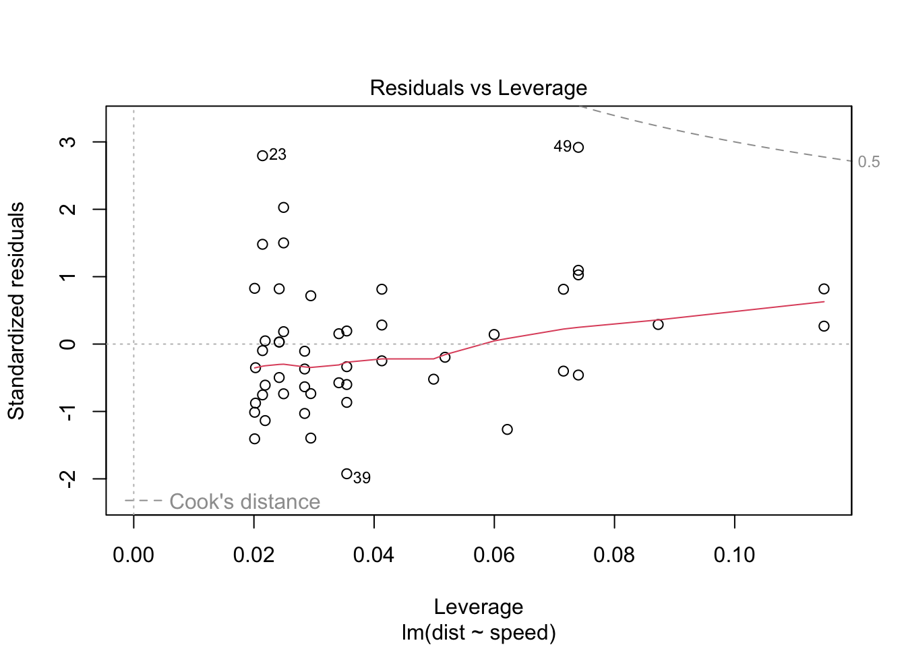
plot() with lm() is quick but the results are not attractive and customizing anything is a huge pain.
8 3. Extract Model Data with broom
To leverage the full power of ggplot2, we need tidy data frames with our data of interest. library(broom) will quickly give us access to these data!
8.1 library(broom)
library(broom) contains three helpful functions for tidying the output of estimated models. library(broom) is extensible and has methods for many models (lm(), glm(), kmeans(), LDA()). We will demonstrate applications with lm():
augment()returns one row per observation in the estimation data and includes information like predicted values and residuals.tidy()returns one row per coefficient and includes information like point estimates and standard errors.glance()returns one row per model and includes information like \(R^2\).
8.1.1 augment()
augment() returns observation-level diagnostics like residuals and hat values.
augment(stopping_model)# A tibble: 50 × 8
dist speed .fitted .resid .hat .sigma .cooksd .std.resid
<dbl> <dbl> <dbl> <dbl> <dbl> <dbl> <dbl> <dbl>
1 2 4 -1.85 3.85 0.115 15.5 0.00459 0.266
2 10 4 -1.85 11.8 0.115 15.4 0.0435 0.819
3 4 7 9.95 -5.95 0.0715 15.5 0.00620 -0.401
4 22 7 9.95 12.1 0.0715 15.4 0.0255 0.813
5 16 8 13.9 2.12 0.0600 15.5 0.000645 0.142
6 10 9 17.8 -7.81 0.0499 15.5 0.00713 -0.521
7 18 10 21.7 -3.74 0.0413 15.5 0.00133 -0.249
8 26 10 21.7 4.26 0.0413 15.5 0.00172 0.283
9 34 10 21.7 12.3 0.0413 15.4 0.0143 0.814
10 17 11 25.7 -8.68 0.0341 15.5 0.00582 -0.574
# ℹ 40 more rows8.1.2 Residual plot
A residual plot compares fitted values and residuals. It is a useful diagnostic to see if there are non-linear patterns that are not captured by the model and to check for constant error variance.
8.1.3 Exercise 1
Let’s estimate a model using a subset of the diamonds data set and then create a residual plot.
# sample 300 observations and set ordinal factors to nominal
set.seed(20200622)
diamonds <- diamonds %>%
slice_sample(n = 300) %>%
mutate(across(where(is.factor), .fns = as.character))# estimate a multiple linear regression model
diamonds_model1 <- lm(formula = price ~ carat + cut, data = diamonds)
class(diamonds_model1)[1] "lm"Step 1: Run the above code to estimate a linear regression model on a subset of the diamonds data.
Step 2: Use augment() to create a data frame with one row per observation in the training data.
Step 3: Create a scatter plot to compare .fitted and .resid. Add geom_smooth().
8.1.4 tidy()
tidy() returns coefficient-level diagnostics like standard errors and p-values.
tidy(stopping_model)# A tibble: 2 × 5
term estimate std.error statistic p.value
<chr> <dbl> <dbl> <dbl> <dbl>
1 (Intercept) -17.6 6.76 -2.60 1.23e- 2
2 speed 3.93 0.416 9.46 1.49e-128.1.5 Coefficient plot
Here’s a simple plot of estimated OLS coefficients and their 95% confidence intervals.
diamonds_model1_coefs <- tidy(
diamonds_model1,
conf.int = TRUE,
conf.level = 0.95
)
diamonds_model1_coefs %>%
ggplot(aes(x = estimate,
y = term,
xmin = conf.low,
xmax = conf.high)) +
geom_vline(xintercept = 0) +
geom_pointrange() +
scale_x_continuous(
limits = c(-10000, 10000),
labels = scales::dollar
)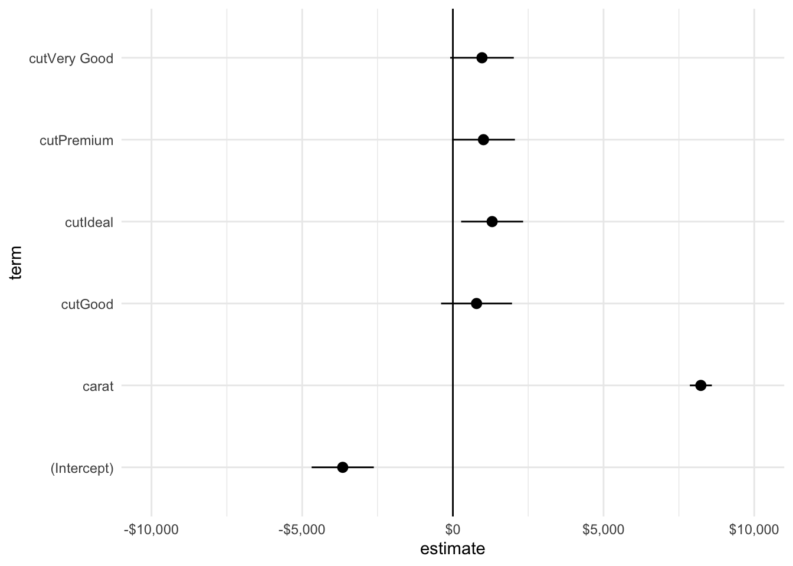
8.1.6 Exercise 2
Let’s estimate a second regression model on the diamonds data set and then compare the models with a coefficient plot.
Step 1: Create diamonds_model2 with price as the dependent variable and carat, cut, and x as independent variables.
Step 2: Use tidy() to create diamonds_model2_coefs. Combine the results using the following code:
models_coefs <- bind_rows(
`model1` = diamonds_model1_coefs,
`model2` = diamonds_model2_coefs,
.id = "model"
)Step 3: Create a coefficient plot with models_coefs. Include color = model.
Step 4: Add position = position_dodge(width = 0.5) to geom_pointrange().
Michael Correll and Michael Gleicher have an interesting paper (preprint here) called “Error Bars Considered Harmful: Exploring Alternate Encodings for Mean and Error”. Consider this figure from their paper:
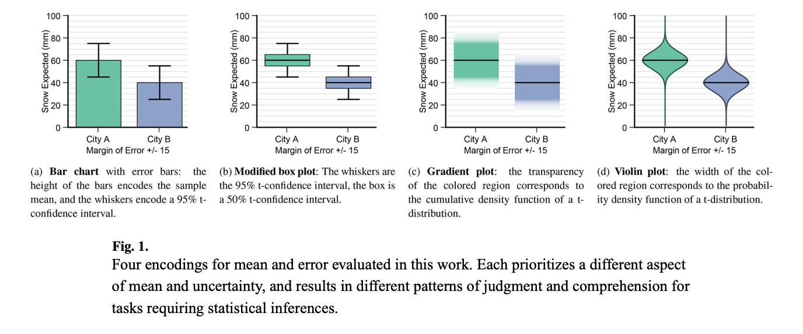
Here, (a) suffers from within the bar bias, and (a) and (b) suffers from issues with binary interpretation. It’s tricky to fully adopt (c) or (d), which are visually symmetric and visually continuous, but I never use bars for coefficients and I never use the “capital I” error bars.
8.1.7 glance()
glance() returns model-level diagnostics like \(R^2\) and \(\hat{\sigma}\).
glance(stopping_model)# A tibble: 1 × 12
r.squared adj.r.squared sigma statistic p.value df logLik AIC BIC
<dbl> <dbl> <dbl> <dbl> <dbl> <dbl> <dbl> <dbl> <dbl>
1 0.651 0.644 15.4 89.6 1.49e-12 1 -207. 419. 425.
# ℹ 3 more variables: deviance <dbl>, df.residual <int>, nobs <int>It isn’t interesting to visualize one model using glance(). However, glance() allows for the comparison of many models.
8.1.8 Detailed Example: Creating Many models
Hadley Wickham gave a great talk about estimating many models to the The Edinburgh R User Group. (The relevant sections begins around the 28-minute mark). Here is an example based on his talk:
library(gapminder)
glimpse(gapminder)Rows: 1,704
Columns: 6
$ country <fct> "Afghanistan", "Afghanistan", "Afghanistan", "Afghanistan", …
$ continent <fct> Asia, Asia, Asia, Asia, Asia, Asia, Asia, Asia, Asia, Asia, …
$ year <int> 1952, 1957, 1962, 1967, 1972, 1977, 1982, 1987, 1992, 1997, …
$ lifeExp <dbl> 28.801, 30.332, 31.997, 34.020, 36.088, 38.438, 39.854, 40.8…
$ pop <int> 8425333, 9240934, 10267083, 11537966, 13079460, 14880372, 12…
$ gdpPercap <dbl> 779.4453, 820.8530, 853.1007, 836.1971, 739.9811, 786.1134, …The gapminder data set contains information about life expectancy, population, and per-capita GDP over time for every country in the world. It comes from Hans Rosling and the Gapminder Foundation.
We can estimate a simple linear regression for every country in the data set with year as the predictor and lifeExp as the outcome variable.
# estimate a linear model for each country
many_models <- gapminder %>%
group_by(country, continent) %>%
# create a nested data frame for each county
nest(data = c(year, lifeExp, pop, gdpPercap)) %>%
# iterate down each row and estimate a model with the nested data frame
mutate(
model = map(
.x = data,
.f = ~glance(lm(formula = lifeExp ~ year, data = .x))
)
) %>%
ungroup()
# extract r^2 from each model
many_models_results <- many_models %>%
mutate(r_squared = map_dbl(model, "r.squared"))
# plot
many_models_results %>%
# reorder the data based on r_squared
mutate(country = forcats::fct_reorder(.f = country, .x = r_squared)) %>%
ggplot(mapping = aes(r_squared, country, color = continent)) +
geom_point(alpha = 0.5)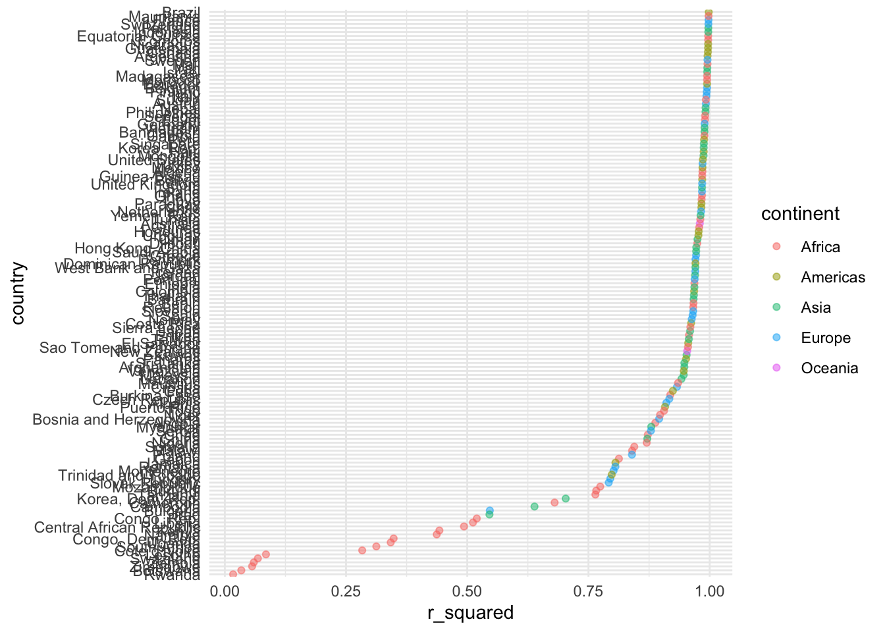
map() functions come from library(purrr) and are based on the Map-Reduce framework. This is a functional approach to iteration that replaces for loops. I recommend reading more here.
Categorical variables are displayed in alphanumeric order by default. fct_reorder() from library(forcats) converts country to a factor and orders it based on the values of r_squared. library(forcats)has several useful functions for ordering categorical axes with library(ggplot2).
Let’s clean this up a little:
bind_rows(
`High R-Squared` = slice_max(many_models_results, r_squared, n = 15),
`Low R-Squared` = slice_min(many_models_results, r_squared, n = 15),
.id = "R-Squared"
) %>%
mutate(country = forcats::fct_reorder(.f = country, .x = r_squared)) %>%
ggplot(mapping = aes(r_squared, country, color = continent)) +
geom_point(alpha = 0.5) +
facet_wrap(~ `R-Squared`, nrow = 2, scales = "free_y")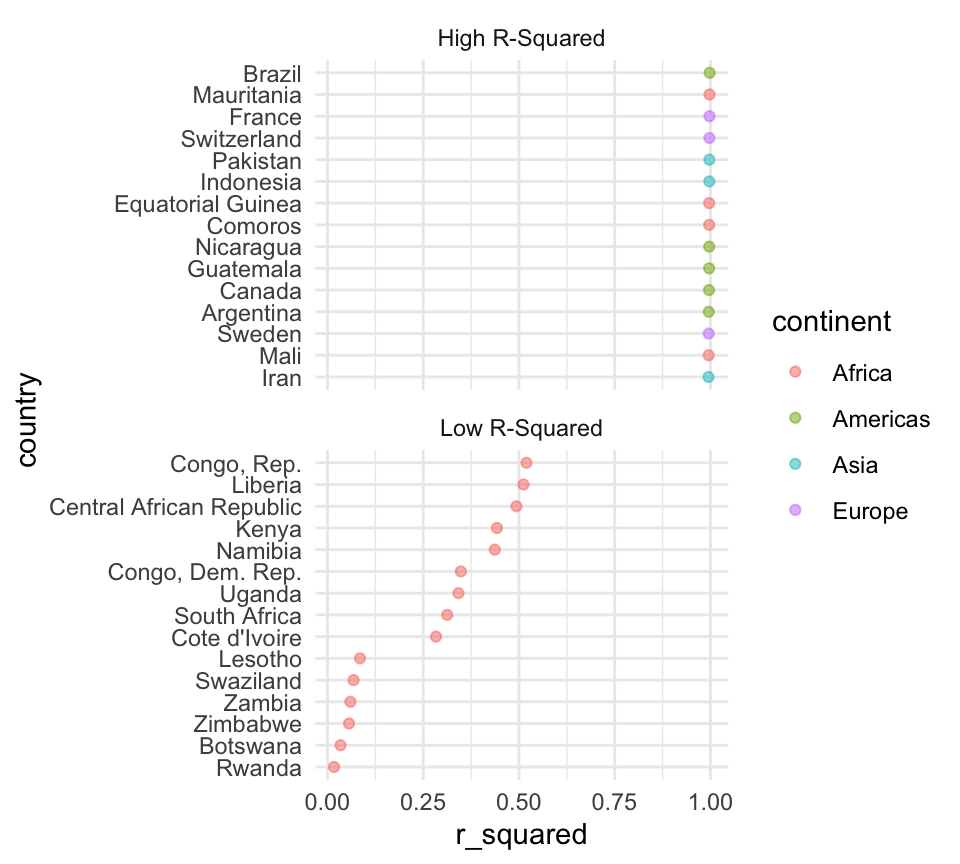
8.1.9 Exercise 3
Step 1: Like above, estimate many models on the diamonds data set. Group by color. You will need to list columns in the nest() functions. Use formula = price ~ carat + cut.
Step 2: Extract \(R^2\) from each model.
Step 3: Visualize the \(R^2\) with a scatter plot with r_squared on the x axis and color on the y axis.
Step 4: Add scale_x_continuous(limits = c(0, 1)).
9 4. Create Data with library(modelr)
library(modelr) has many useful functions for modeling. It works with more types of models than just linear models from lm().
9.1 add_predictions()
add_predictions() adds predictions to a data set using an estimated model object.
add_predictions(data = diamonds, model = diamonds_model1)# A tibble: 300 × 11
carat cut color clarity depth table price x y z pred
<dbl> <chr> <chr> <chr> <dbl> <dbl> <int> <dbl> <dbl> <dbl> <dbl>
1 0.7 Very Good I VVS1 62.9 58 2513 5.65 5.67 3.56 3070.
2 1.52 Ideal I SI2 61.7 57 7582 7.38 7.41 4.56 10154.
3 0.31 Ideal H SI1 61.3 55 421 4.35 4.39 2.68 198.
4 0.71 Ideal D VS2 59.9 57 3540 5.8 5.83 3.48 3489.
5 2.07 Ideal I SI2 62 55 16189 8.12 8.22 5.07 14680.
6 1 Ideal E SI2 61.9 56 4760 6.43 6.4 3.97 5876.
7 1.2 Ideal G SI1 61.2 56 7920 6.87 6.88 4.21 7521.
8 0.52 Good H VS2 63.7 54 1385 5.12 5.09 3.25 1409.
9 0.65 Very Good G VS2 63.2 57 2009 5.54 5.47 3.48 2659.
10 0.49 Premium F SI2 62.2 59 1073 5.09 5.04 3.15 1392.
# ℹ 290 more rows9.2 add_residuals()
add_residuals() adds residuals to a data set using an estimated model object.
add_residuals(data = diamonds, model = diamonds_model1)# A tibble: 300 × 11
carat cut color clarity depth table price x y z resid
<dbl> <chr> <chr> <chr> <dbl> <dbl> <int> <dbl> <dbl> <dbl> <dbl>
1 0.7 Very Good I VVS1 62.9 58 2513 5.65 5.67 3.56 -557.
2 1.52 Ideal I SI2 61.7 57 7582 7.38 7.41 4.56 -2572.
3 0.31 Ideal H SI1 61.3 55 421 4.35 4.39 2.68 223.
4 0.71 Ideal D VS2 59.9 57 3540 5.8 5.83 3.48 50.6
5 2.07 Ideal I SI2 62 55 16189 8.12 8.22 5.07 1509.
6 1 Ideal E SI2 61.9 56 4760 6.43 6.4 3.97 -1116.
7 1.2 Ideal G SI1 61.2 56 7920 6.87 6.88 4.21 399.
8 0.52 Good H VS2 63.7 54 1385 5.12 5.09 3.25 -23.9
9 0.65 Very Good G VS2 63.2 57 2009 5.54 5.47 3.48 -650.
10 0.49 Premium F SI2 62.2 59 1073 5.09 5.04 3.15 -319.
# ℹ 290 more rows9.3 data_grid()
data_grid() creates an evenly-spaced grid of points using the range of observed predictors in a data set. This is useful for visualization and is really, really useful for understanding generalized linear models. seq_range() can be used with data_grid() to add a finer grid of values.
data_grid(data = diamonds, carat, cut) %>%
add_predictions(diamonds_model1)# A tibble: 465 × 3
carat cut pred
<dbl> <chr> <dbl>
1 0.2 Fair -2010.
2 0.2 Good -1224.
3 0.2 Ideal -707.
4 0.2 Premium -995.
5 0.2 Very Good -1044.
6 0.23 Fair -1763.
7 0.23 Good -977.
8 0.23 Ideal -460.
9 0.23 Premium -748.
10 0.23 Very Good -797.
# ℹ 455 more rowscut_levels <- c("Fair", "Good", "Very Good", "Ideal", "Premium")
data_grid(data = diamonds, carat, cut) %>%
add_predictions(diamonds_model1) %>%
mutate(cut = factor(cut, levels = cut_levels)) %>%
ggplot(aes(x = carat, y = pred, color = cut)) +
geom_line(alpha = 0.5) +
scale_x_continuous(
limits = c(0, 3),
expand = c(0, 0)
) +
scale_y_continuous(
limits = c(-5000, 20000),
expand = c(0, 0),
labels = scales::dollar
) +
labs(title = "data_grid() is useful for interpreting a regression line")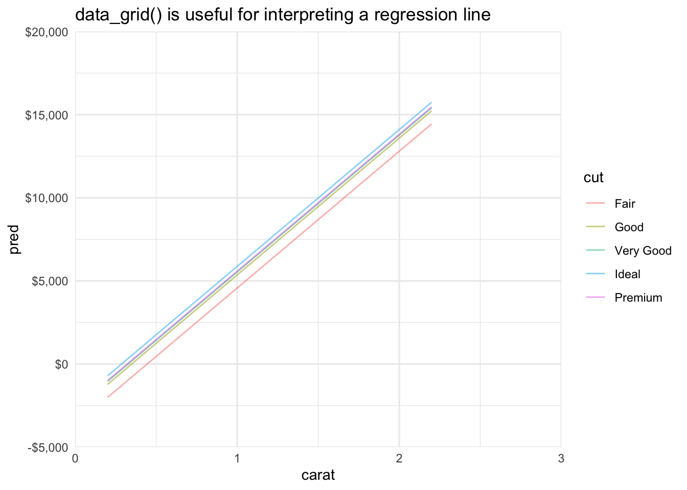
Categorical variables are displayed in alphanumeric order by default. Here, we use factor() to give cut a meaningful order: “Fair”, “Good”, “Very Good”, “Ideal”, and “Premium”.
9.4 Complex Models and GLMs
library(modelr) is useful for visualizing complex models such as polynomial regression or generalized linear models (GLMs) like logistic regression.
set.seed(20201005)
# simulate a predictor
x1 <- runif(n = 1000, min = 0, max = 10)
# simulate the outcome and create a tibble
sim_data <- bind_cols(
x1 = x1,
y = 10 * sin(x1) + 20 + rnorm(n = length(x1), mean = 0, sd = 2)
)
# plot
sim_data %>%
ggplot(aes(x1, y)) +
geom_point(alpha = 0.1)
Let’s fit a 4th-degree polynomial and then add a line for the conditional mean. We could also use augment() in this case because the x1 is dense. If there are gaps in predictors, then data_grid() is necessary.
# fit a model with a 4th-degree polynomial
lm_4 <- sim_data %>%
lm(formula = y ~ poly(x1, degrees = 4, raw = TRUE), data = .)
# create a grid andd predictions
conditional_mean <- data_grid(sim_data, x1) %>%
add_predictions(lm_4)
# plot
ggplot() +
geom_point(
data = sim_data,
mapping = aes(x1, y),
alpha = 0.1
) +
geom_line(
data = conditional_mean,
mapping = aes(x1, pred),
color = "red"
)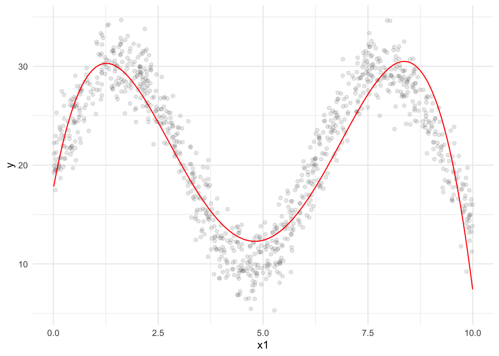
9.4.1 Exercise 4
This example will demonstrate plotting predicted probabilities for a simple logistic regression model.
Step 1: Run the following to create a binary outcome variable.
cars <- cars %>%
mutate(crash = as.numeric(dist > 25))
Step 2: Using lm(), estimate a linear regression model (linear probability model) with crash as the outcome variable and speed as the predictor. Call it cars_lm.
Step 3: Run the following to estimate a logistic regression model:
cars_glm <- glm(factor(crash) ~ speed, data = cars, family = "binomial")
Step 4: Use data_grid() to create a new data frame. Use speed = seq_range(speed, 1000) to make a consistent grid of values for speed.
Step 5: Create a data frame with conditional probabilities for both models with the following code:
models <- data_grid(cars, speed = seq_range(speed, 1000)) %>%
add_predictions(cars_lm, var = "lm") %>%
add_predictions(cars_glm, type = "response", var = "glm")Step 6: Plot the predicted probabilities for the linear probability model and logistic regression model. I used three layers: geom_point(), geom_line() with y = lm, and geom_line() with y = glm.
10 Summary
Hopefully these notes demonstrate the power of using a tool (R) that has powerful modeling tools and powerful visualization tools. There are several approaches to visualizing regression models.
We can model with ggplot2 or use base R to quickly visualize our data. With a little more work, we can use library(broom) and library(modelr) to create tidy data frames and leverage the full power of ggplot2.
- Create models with
ggplot2 - Use Base R to Explore
lmObjects - Extract Model Data with
broom - Create Data with
library(modelr)